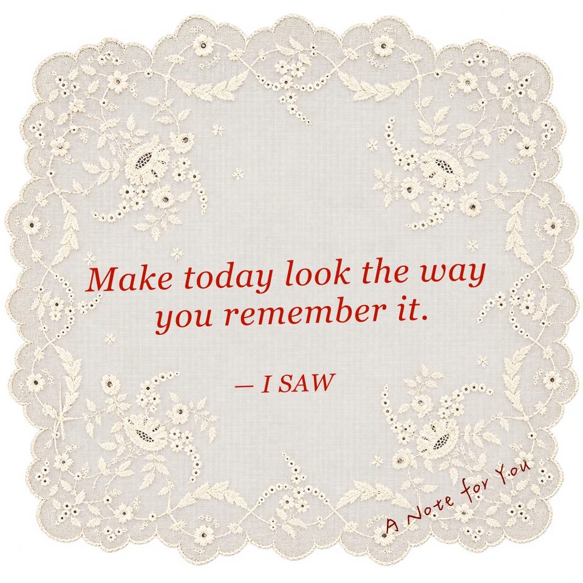

I SAW / DESIGN LANGUAGE COLLECTION 001
14 覆蓋項目44 UI 色階01 共同語言
紙感 / 克制 / 手作的溫度
共用來源：I SAW 正式網站的 design-tokens.css 與 design-components.css、互動樣式與 Gallery 樣式（v1.1）。
「原有」代表擷取自現行樣式；「補充」代表為元件庫新增的互動或規範。
「原有」代表擷取自現行樣式；「補充」代表為元件庫新增的互動或規範。
01 / FOUNDATIONS
OKLCH · 4 × 11UI 色階 Color in balance
品牌紅、輔助米色、備用藍色與無彩色。從 50 到 950，讓底色、文字與互動都有自己的位置。
正在載入 OKLCH 色階…
BRAND RED
red-600
L 是感知明度，C 是彩度，H 是色相。50 最淺、950 最深；各色系的明度由淺至深遞減。所有色票都落在 sRGB 色域，HEX 為對照值；無彩色的 C 固定為 0。色階不是以數字等差切分，需依 UI 用途選色。
用在介面裡 Semantic roles
品牌紅為主 · 藍色備用I SAW / A LITTLE MEMORY
留一點溫度給日常。
米色承接內容，深色保留閱讀的清楚。紅色引導重要的下一步。
備用資訊色藍色只在需要第二層資訊識別時使用，不取代品牌紅。
| 用途 | 語意 Token | 對應色階 |
|---|
現有網站對應 Product aliases
保留原有品牌錨點現有 --red、--paper 等名稱接到新色階，維持正式頁目前的外觀。新增 UI 請優先使用 --ui-* 語意 Token；次要內文使用 --ui-text-muted（beige-700）。舊 --muted 保留為 beige-600，與米色底的對比約 4.35:1，不作為新的一般小字配色。
01 / FOUNDATIONS
原有字族 · 補充層級字體 Typography
DISPLAY / SERIFGeorgia · Songti TC
品牌敘事、引言
品牌敘事、引言
把感覺，收藏起來。A little memory.
BODY / SANSHelvetica Neue · PingFang TC
介面內容、段落說明
介面內容、段落說明
一些日常，一些不一樣的看法。一般說明建議 14–16px，行高 1.7，讓閱讀留一點空氣。
LABEL / MONOSF Mono · Menlo · Courier New
控制標籤、參數、英文註記
控制標籤、參數、英文註記
LOOK WHAT I SAW TODAY.11px / 1.5 · letter-spacing: .06em
01 / FOUNDATIONS
原有尺寸 · 補充整理間距與線條 Space & structure
01 / HAIRLINE
1px · rgba(20,20,18,.22)
02 / CORNER
0px · 保留紙張的俐落直角
03 / MOTION
150–180ms · 色彩、邊框過渡
02 / COMPONENTS
原有 · 錯誤提示為補充輸入與控制 Input & controls
規格 SPECIFICATION
少一點邊框，多一點秩序。
標籤在左、數值靠右，以整列細線建立對齊。輸入區使用 5% Ink 淺底，Focus 加深並保留可見焦點。
請輸入 0.1–60 秒。試試輸入 0 或文字。02 / COMPONENTS
正式 .preset 元件 · CSS 示意效果濾鏡卡片 Filter card
固定 4:5 縮圖，選取時以紅色雙層邊線標記。下列效果為展示，不執行產品的影像處理引擎。
目前選取：Super 8縮圖比例 4:5Gap 14px × 10pxSelected 2px + 1px
02 / COMPONENTS
正式 .cell 元件摺疊面板 Collapsible panel
效果 EFFECTS
Super 8 · 暖色、顆粒與輕微褪色。
設定檔 PRESET
儲存並重複使用一組熟悉的風格。
把複雜的操作，輕輕收起。
中文標題在左，英文註記靠右。用 ＋ / − 表示收合狀態，整個標題列皆可點擊，也能以 Enter 或空白鍵操作。
Padding 24px · Border 1px
手機版建議 Padding 20px 16px
02 / COMPONENTS
原有材質 · 展示內容為補充彈出視窗 Modal dialog
A MOMENT TO KEEP
LINEN TEXTURE / STITCHED EDGE為這段日常，留個位置。
亞麻紙材與縫線，讓重要的操作有一點儀式感。
以原生 dialog 管理焦點，背景無法操作；可用關閉按鈕、Esc 或點擊遮罩關閉，結束後焦點回到開啟按鈕。
02 / COMPONENTS
本次補齊 · 正式元件開關與色票 Choice controls
字幕顏色
重設狀態
顏色：#e0a23a · 已使用預設值
小控制，也要有明確狀態。
方形開關使用正式的 aria-checked 狀態。色票有選取邊線；值改動後才啟用重設。
Look what I saw today.
輸入 #RRGGBB，按 Enter 套用。
02 / COMPONENTS
本次補齊 · 正式元件選單與回饋 Select & feedback
畫面比例
鎖定選單
儲存範圍
全部 6 格。
尚未開始 · 只示範狀態，不產生影片
從輸入，一直到完成。
自製選單支援方向鍵、Enter 與 Escape。輸出示範包含進行中、取消與完成狀態；輸出範圍沿用正式的錯誤邊框。
.csel / .pickrange
.expprogress / .btn.cancelling
02 / COMPONENTS
本次補齊 · 正式樣式素材與秒數 Media controls
4s
選取素材 · 停留 4 秒。照片只在此瀏覽器預覽。
02 / COMPONENTS
本次補齊 · 正式元件Gallery 元件 Cards & detail
看見，再帶進自己的日常。
藝廊卡片、資訊標籤、左右分欄的詳細視窗與套用入口，直接使用正式 Gallery CSS。點圖可查看詳細範例。
.isaw-gallery / .card
.detail / .tag / .apply
03 / BRAND ELEMENTS
原有素材材質與裝飾 Material library

04 / GUIDELINES
補充建議使用規範 Keep it considered
讓內容先被看見
紙材保持低對比；蕾絲與縫線用於品牌或重要彈窗，避免每個元件都加裝飾。
每次只留一個重點
同一個操作區只放一個主按鈕。紅色用在選取、互動和需要注意的狀態。
操作必須有回應
保留鍵盤焦點。停用提供原因；錯誤搭配文字；進度提供狀態及取消方式。
把觸碰的空間留出來
手機版主要操作建議至少 44px 觸控區。尊重減少動態效果設定，文字與背景保持可讀對比。
FOR THE NEXT CHAPTER
從同一份 Tokens 開始。
下載 CSS 與 JSON 設計變數，作為後續設計、開發與 AI 協作的共同基礎。
04 / COVERAGE AUDIT
v1.1 · 2026.10.25元件覆蓋清單 What is connected
已逐項比對正式編輯器、Gallery 與這份元件庫。共用樣式集中維護；產品流程保持在原頁。
| 項目 | 正式站共用 | 元件庫展示 |
|---|
影像濾鏡引擎、影片裁切／轉檔、字幕時間軸、描圖紙 Our Story、銀盒與蕾絲定位，屬產品專用行為與構圖，保留在正式頁面。元件庫明確標示示意效果，避免把展示當成完整處理引擎。未重新執行 MP4 匯出。
共用來源：design-tokens.css / design-components.css / design-patterns.css / design-gallery.css
沒有符合的項目。試試「按鈕」、「色彩」或「材質」。